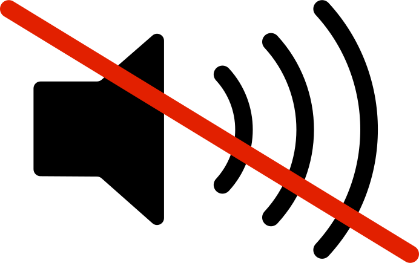

A CURA DI
Edoardo Ceriani, Giovanni Clericetti, Giorgia Fulghieri, Francesco Nozza, Marco Zagaria
Edoardo Ceriani, Giovanni Clericetti, Giorgia Fulghieri, Francesco Nozza, Marco Zagaria
Se avessimo la possibilità di guadagnare vendendo i nostri dati più intimi e privati, saremmo disposti a farlo?
La rete è uno strumento molto potente, in grado di fornire gratuitamente una serie di servizi.
Ma com’è possibile tutto questo? La valuta di scambio su cui internet si fonda sono i dati degli utenti.
Di fronte alla prospettiva di una società sempre più digitalizzata nasce SourData.
Il progetto pone le sue basi in una speculazione fortemente attuale: se potessimo vendere
i nostri dati più intimi, saremmo disposti a farlo?

La marca risponde al quesito proponendo un sistema prodotto-servizio composto da tre dispositivi
che raccolgono dati in ambiti estremamente privati: masturbazione, feci e alito. Il tutto è coronato
da un’identità di marca ironica e irriverente caratterizzata da un immaginario pop. Lo scopo è far riflettere
sulla cessione dei dati personali nel mondo contemporaneo.
CURATED BY
Edoardo Ceriani, Giovanni Clericetti, Giorgia Fulghieri, Francesco Nozza, Marco Zagaria
Edoardo Ceriani, Giovanni Clericetti, Giorgia Fulghieri, Francesco Nozza, Marco Zagaria
If we had the opportunity to make money by selling our most intimate
and private data, would we be willing to do so?
The network is an extremely powerful tool that can provide a wide range of services for free.
But how is all of this possible? The exchange currency on which the Internet is based is the collection of users’ data.
SourData was born from the perspective of an increasingly digitalized society.
The project lays its foundation in a highly contemporary speculation: if we could sell our most intimate data,
would we be willing to do so?
The brand answers this question by proposing a product-service system formed by three devices
capable of collecting data in extremely private areas such as: masturbation, feces and breath.
The project is completed by an ironic and irreverent visual identity, characterized by a pop imagery.
The purpose is to make people think about the transfer of personal data in the contemporary world.
PROSSIMO PROGETTO
NEXT PROJECT